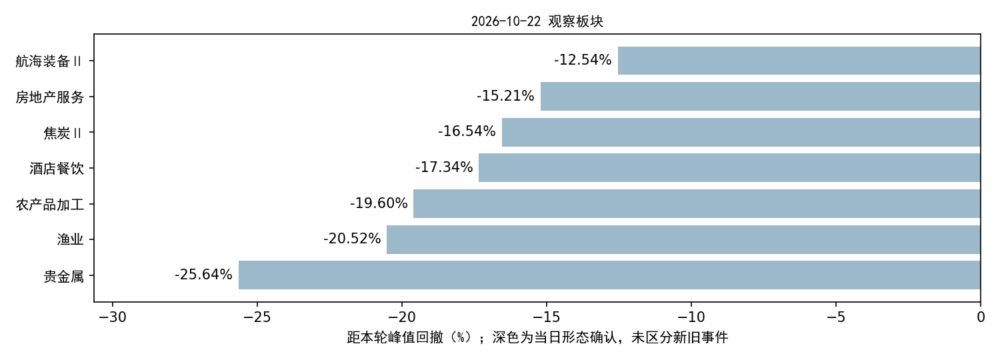

A股行情已更新至22日，新增5,570条有效日线；当前策略新首次确认0个，新个股候选0只。对应下一交易日为2026-10-23。
年度板块判断继续暂停。原个股资格、价格形态、正分前5名、首次确认去重及下一交易日有效规则保持原样。
| api | raw_rows | covered | missing |
|---|---|---|---|
| daily | 5570 | 5570 | 0 |
| adj_factor | 5579 | 5570 | 0 |
| daily_basic | 5570 | 5570 | 0 |
| moneyflow | 5577 | 5570 | 0 |
四接口覆盖全部当日有交易股票，15项核验字段无缺失；重复键、OHLC异常、复权不一致均为0。原始成交量、成交额和收盘价与入库一致。21日及以前的2026行情与旧冻结快照逐行一致。
上市主档5,579条，5,570只有行情、7只全日停牌、2条已知终止上市但状态滞后记录。详见逐股原因、字段覆盖、核验汇总。过期主档问题沿用此前核验，本次未改写历史主档。
板块数据：103个当日有效板块，成员归属覆盖79.30%。美股、基准指数和历史行业资料未在本次同步；行业历史PIT/完整性限制仍在。本次只对现有模型使用的A股数据与既定板块范围进行更新和扫描。
| 环节 | 数量 |
|---|---|
| 有效板块 | 103 |
| 观察板块 | 7 |
| 触发层板块 | 7 |
| 当日形态确认 | 0 |
| 去重后新首次确认 | 0 |
| 进入个股筛选的板块 | 0 |
| 本次评分股票 | 0 |
| 新个股候选 | 0 |
| 板块 | 代码 | 当日形态确认 | 距峰值回撤 | 距参照位 | 状态说明 |
|---|---|---|---|---|---|
| 农产品加工 | 801012.SI | 否 | -19.60% | 2.35% | 近期未破支撑；下跌未减速 |
| 渔业 | 801015.SI | 否 | -20.52% | 3.55% | 下跌未减速 |
| 贵金属 | 801053.SI | 否 | -25.64% | -12.26% | 近期未破支撑；下跌未减速 |
| 房地产服务 | 801183.SI | 否 | -15.21% | -0.43% | 下跌未减速 |
| 酒店餐饮 | 801219.SI | 否 | -17.34% | -9.67% | 下跌未减速 |
| 航海装备Ⅱ | 801744.SI | 否 | -12.54% | -2.81% | 近期未破支撑；下跌未减速 |
| 焦炭Ⅱ | 801952.SI | 否 | -16.54% | -4.62% | 下跌未减速 |

无新个股候选。当日没有新首次事件，个股评分流程按规则跳过，不代表所有个股模型评分失败。
养殖业20日旧事件和酒店餐饮9月17日旧事件不会因为形态再次通过而重开入场；只有新的独立首次确认才能进入个股流程。20日养殖业候选的原有效日为21日，不顺延至23日。分数是排序输出，模型候选不等于实际成交。
本次依次执行原 update_market.py、build_sector_dataset.py、scan_sectors.py 和当前策略 scan_stocks.py；仅新增日期配置和本目录的调用/审计/报告脚本。原数据工程代码、模型权重及策略配置哈希未变，数据和模型产物哈希均通过检查。
快照：datahub/releases/selection_live_20261022_eod；内容ID：6b0908addd9048da828d6c65901d39e567c8b278ef9bee494040d5b4f49004cd。